THE FLEET
Black Water Kannon™
Four domains. One AI. Most fleets add a new tool with every new platform. Every Black Water Kannon™ unit is powered by the same AI, N.O.L.A.N.™, so assets in the air, with K9 teams, on the ground and on the water operate as one coordinated response.
THE NAME
Why Kannon™
Kannon is named in respectful tribute to the Japanese goddess of compassion. It is a fitting name for a fleet built to reach people in danger and bring responders back.
01
Black Water Kannon™ Air, powered by N.O.L.A.N.™
Proposed asset line (copy v2). Role to be confirmed by Robert.
Black Water's air unit, working under the same operations leader as every other unit on the mission.
02
Black Water Kannon™ K9, powered by N.O.L.A.N.™
Proposed asset line (copy v2). Role to be confirmed by Robert.
Black Water's K9 unit, brought into the same network as the rest of the response.
03
Black Water Kannon™ Ground, powered by N.O.L.A.N.™
Proposed asset line (copy v2). Role to be confirmed by Robert.
Black Water's ground unit, coordinated alongside air, K9 and maritime assets.
04
Black Water Kannon™ Maritime
Proposed asset line (copy v2). Role to be confirmed by Robert.
Black Water's maritime asset, for incidents on and around the water.
Coordinated by N.O.L.A.N.™, Patent Pending (U.S. Appl. No. 19/851,696)
FLEET ARCHITECTURE
One fleet, one operations leader
Without a common operations leader, every new platform adds another tool to manage. With N.O.L.A.N.™, every Kannon™ unit joins the same network, and the crew runs one mission.
WHO IT SERVES
Who it serves
Black Water Kannon™ is built for U.S. search and rescue, fire, EMS and police teams, and the program offices that equip them.
NEXT STEP
Brief your team on the Black Water Kannon™ fleet.
Agencies, program offices and investors can request a briefing on the fleet and the AI that powers it.